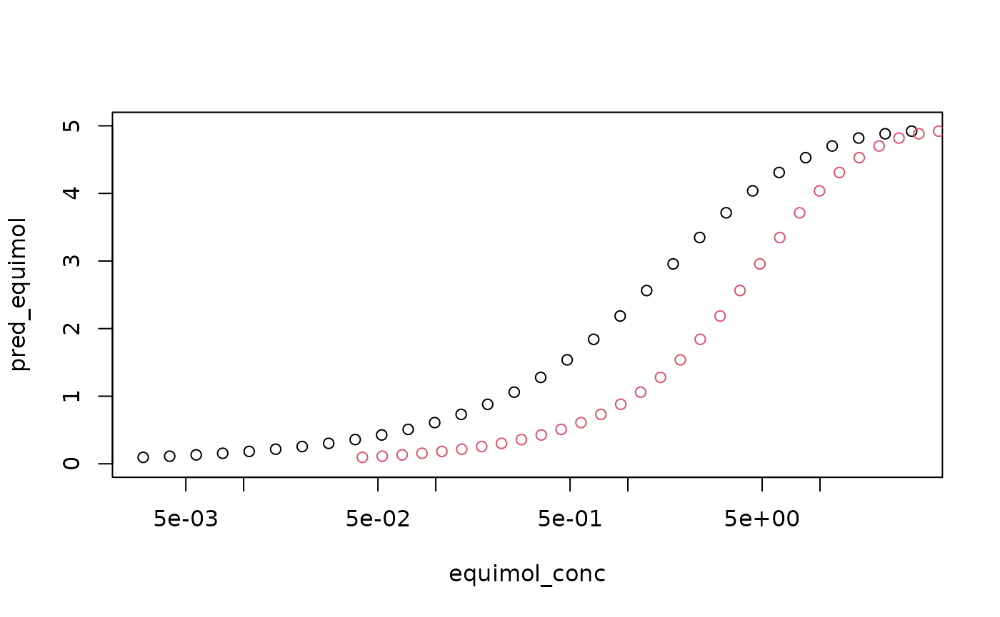

Simple Usage of RGCA
While the method could be generalize to a variety of smooth, monotone dose response functions, our package is designed around the Hill function, \[f(x |a,b,c) = \frac{a}{1+\left(\frac{b}{x}\right)^{c}}\] The parameters are the sill (a), the EC50 (b), and the slope (c). Give these parameters and a cluster assignment vector, RGCA can create a calculator that predicts the mixture response given an input dose vector \((x_1,...,x_n)\). In the example below, there are three chemicals with known Hill parameters.
n_chems <- 3
sills <- c(3, 5, 4)
ec50_vec <- c(1, 0.75, 2.4)
slopes <- c(0.5, 1.1, 2.0)
# Rmax is used to scale IA across clusters, can copy sills
param_matrix <- as.matrix(cbind("a" = sills,
"b" = ec50_vec,
"c" = slopes,
"max_R" = sills))
# specify both chems in cluster 1 of 1
cluster_assign_vec <- c(1, 2, 1)
# create a calculator to predict response given concentration
mix_pred <- mix_function_generator(param_matrix, cluster_assign_vec)To create a mixture, we need to specify the concentration of each chemical.
# generate mix concentrations: each row of the matrix is one dose of the mix
n_samps <- 30
# equipotent mixture: concentrations scaled by EC50
equipot_conc_matrix <- matrix(0, nrow = n_samps, ncol = n_chems)
# equimolar mixture: equal concentration of all chemicals
equimol_conc_matrix <- matrix(0, nrow = n_samps, ncol = n_chems)
# generate concentrations on the log scale
for (chem_idx in 1:n_chems) {
equipot_conc_matrix[, chem_idx] <-
ec50_vec[chem_idx] / (10^seq(2, -1, length.out = n_samps))
equimol_conc_matrix[, chem_idx] <-
1 / (10^seq(3, -1, length.out = n_samps))
}
#create the mixture concentration vector for plotting
equipot_conc <- rowSums(equipot_conc_matrix)
equimol_conc <- rowSums(equimol_conc_matrix)
# Apply the pediction function to the concentrations of interest
pred_equipot <- apply(equipot_conc_matrix,
MARGIN = 1,
FUN = function(x) mix_pred(x))
pred_equimol <- apply(equimol_conc_matrix,
MARGIN = 1,
FUN = function(x) mix_pred(x))Now we can plot the two predicted mixture responses.
plot(equimol_conc, pred_equimol, log = "x", ylim = c(0, 5))
points(equipot_conc, pred_equimol, col = 2)